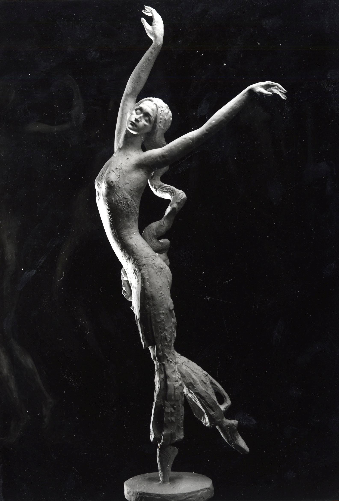
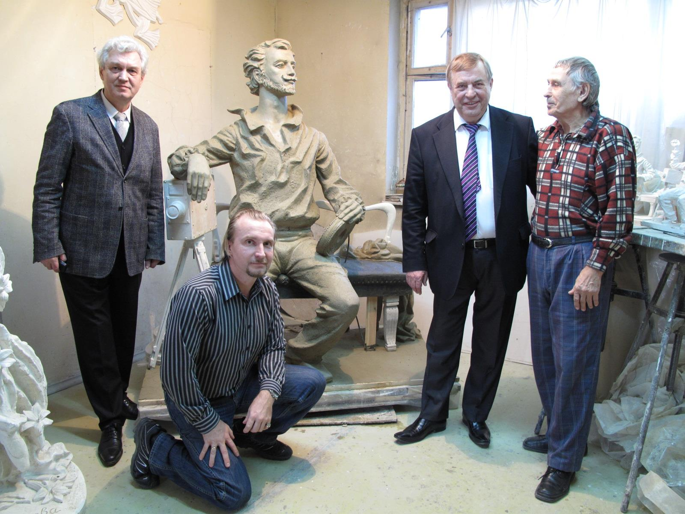
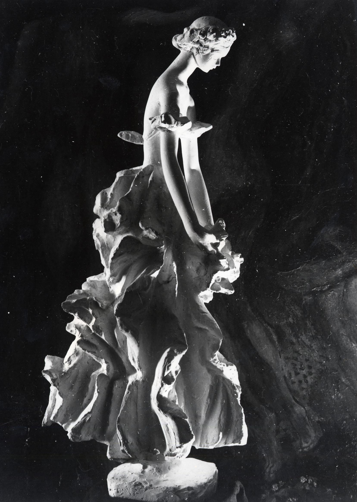
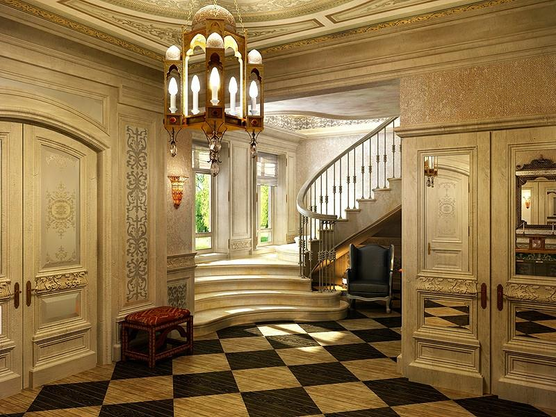
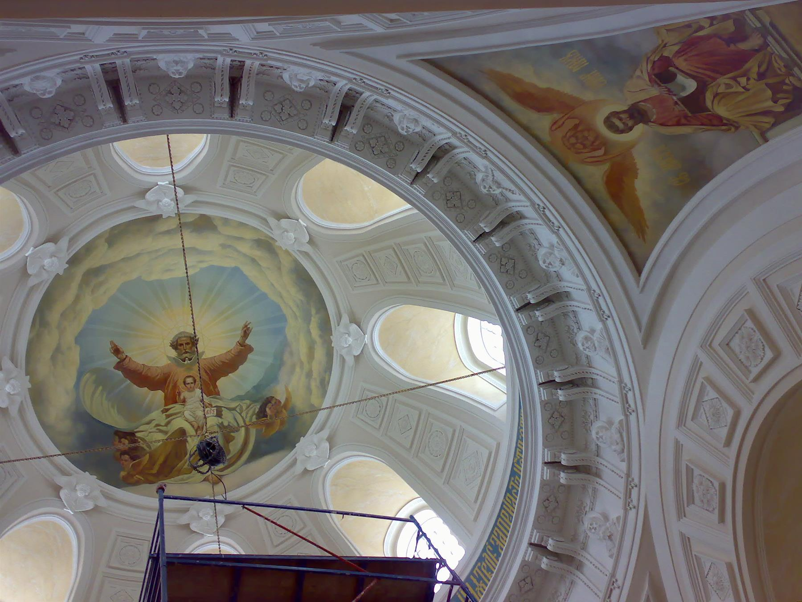

Начинаем с сути
Обсуждаем идею, контекст и ваши ожидания. Находим то, что делает проект особенным.
Искусство, которое меняет пространство.
Пространство, которое меняет ощущения.

Мы создаём необыкновенное
из того, что вы чувствуете.
Разные масштабы. Разные материалы.
Один подход: внимание к сути
и бескомпромиссность в деталях.
Скульптура · Живопись · Интерьеры · Цифровые эксперименты

ТАМ, ГДЕ РОЖДАЕТСЯ ФОРМАТРИФОТИ — пространство, где искусство встречается с архитектурой, а ручная работа — с цифровыми инструментами.
Нас интересует не отдельный предмет, а его диалог с человеком и пространством. Скульптура, интерьер, живопись или цифровая форма — для нас это разные языки одной идеи.
Узнать наш подход ↗Монументальные и камерные произведения, портреты, пластические композиции. Работа с характером, движением и выразительностью материала.

Пространства с собственной атмосферой: интерьерные концепции, декоративные элементы, авторские детали и художественные акценты.

Цвет, фактура и свет. Живописные произведения, росписи, рельефы и декоративные композиции как часть целостного пространства.

Цифровые эксперименты с объёмом и материалом. Интерактивная модель из Step3D — пример того, как объект можно исследовать прямо в браузере.
Обсуждаем идею, контекст и ваши ожидания. Находим то, что делает проект особенным.
Работаем с эскизами, композицией и материалами. Превращаем ощущения в ясную концепцию.
Уточняем детали и воплощаем замысел — в мастерской, цифровой среде или пространстве.
Расскажите, что вы задумали.
Даже если это пока только ощущение.
Сохраните описание проекта, чтобы передать его команде студии.